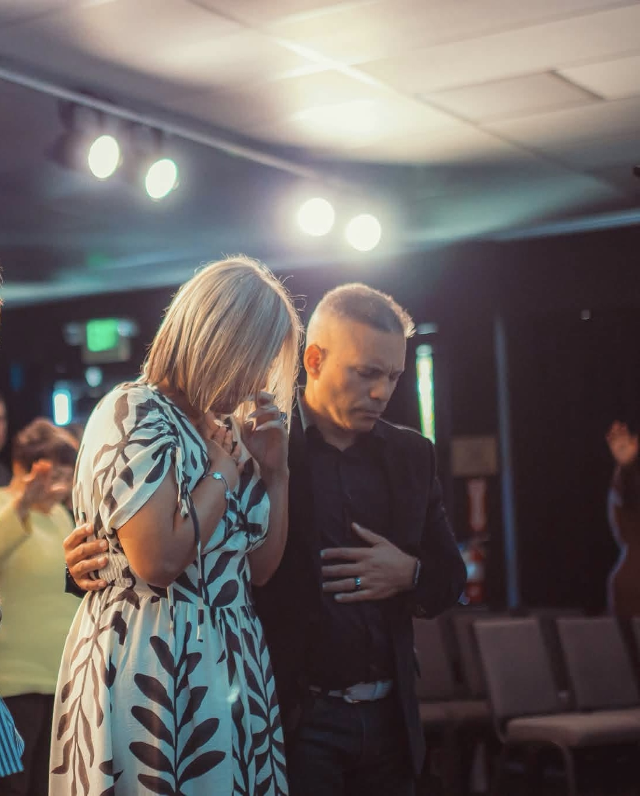
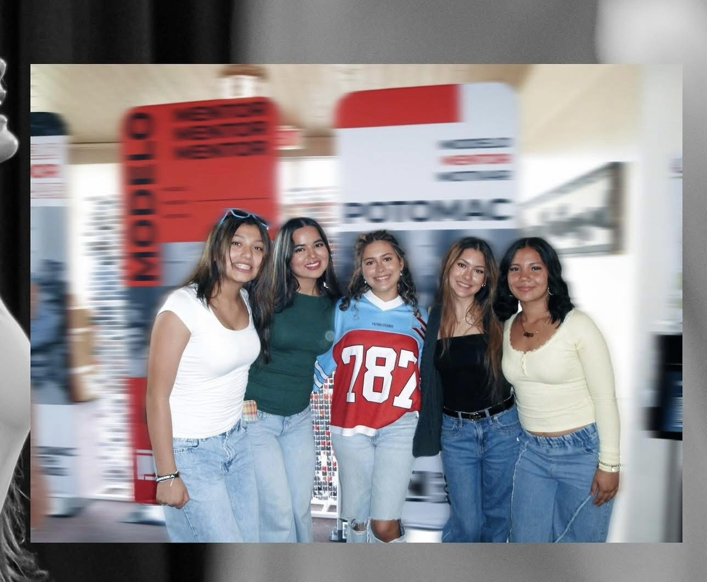
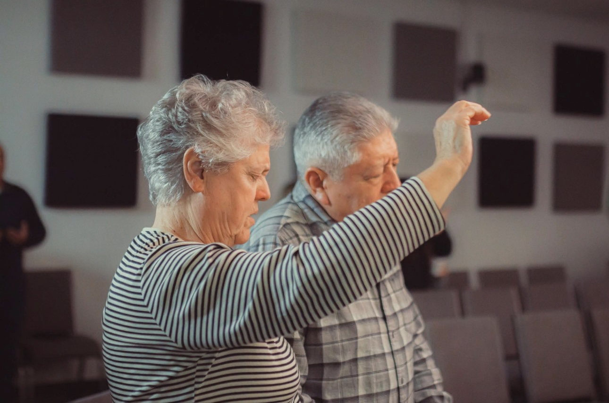

Iglesia de la Familia
Un lugar donde la gracia de Dios fluye como un río de vida. Declaramos salvación, renovación y esperanza para todos los hogares de nuestra comunidad.
Cada Domingo: 11:00 AM
Estudio Bíblico: Miércoles 7:00 PM
En la Iglesia Fuente de Vida, nuestra pasión es proclamar el mensaje restaurador de Jesucristo. Como Iglesia de la Familia, creemos que cada hogar en Aberdeen y Harford County merece experimentar el amor, la salvación y el propósito que solo Dios puede dar.
Fundamentados con solidez en la Palabra de Dios.
Un ambiente cálido y seguro para niños y jóvenes.

Unidos en Cristo
Nos fundamentamos en la verdad inquebrantable de la Palabra de Dios y las verdades doctrinales esenciales que guían nuestra fe y comunidad.
La salvación es la liberación de la muerte espiritual y de la esclavitud del pecado. La única esperanza de redención de la humanidad es mediante la sangre de Jesucristo, derramada al morir en la cruz.
Marcos 15, Lucas 23, Juan 19, Lucas 24:47, Juan 3:16-17La sanidad divina es una parte integral del evangelio. La liberación de la enfermedad fue provista en la expiación y constituye el privilegio de todos los creyentes.
Isaías 53:4-5; Santiago 5:14-16Todos los creyentes pueden recibir el bautismo en el Espíritu Santo, y por tanto, deben esperar y buscar ardientemente la promesa del Padre, según el mandato de nuestro Señor Jesucristo.
Hechos 1:4,8; Hechos 2:4Los cristianos que han fallecido se levantarán para reunirse con el Señor en el aire, y los vivos serán arrebatados juntamente con ellos. Esta verdad es nuestra «esperanza bienaventurada».
1 Tesalonicenses 4:16-17; Tito 2:13Te abrimos nuestras puertas. Encuentra el horario perfecto para congregarte con tu familia.
Un tiempo de bendición familiar con alabanza en vivo, mensaje de la Palabra de Dios y clases infantiles.
Nos unimos en fe a orar por peticiones familiares, sanidad y fortaleza para nuestra comunidad.
Enseñanza práctica de la Escritura para fortalecer principios y valores bíblicos en la vida diaria.
Cada grupo de edad tiene un lugar para aprender, servir y conectar en la casa de Dios.
Enseñanzas dinámicas y creativas para cimentar la fe en los más pequeños.
Más información →
JóvenesUn espacio vibrante para que los jóvenes fortalezcan su propósito e identidad en Cristo.
Más información →Guiando a la iglesia a la presencia del Señor en cada tiempo de adoración.
Más información →
FamiliasReuniones enfocadas en edificar parejas sólidas y aconsejar a los padres.
Más información →Revive nuestros mensajes recientes directamente desde YouTube.
Gracias a tus diezmos y ofrendas podemos continuar extendiendo el mensaje de salvación, apoyando a familias vulnerables y sosteniendo las instalaciones en Aberdeen, MD.
Estaremos felices de recibirte a ti y a tu familia en nuestro próximo servicio.
Ubicada céntricamente en Aberdeen, MD, con estacionamiento cómodo y accesibilidad total.
Dirección: 690 S Philadelphia Blvd #500, Aberdeen, MD 21001
Teléfono: (443) 845-7097
Correo: info@iglesiafuentedevidamd.com